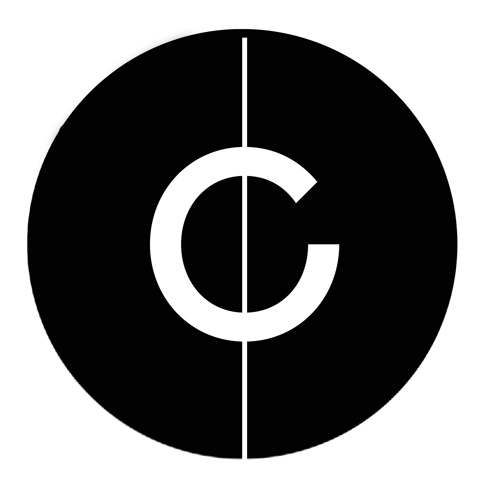

RESET

„Monochord Immersyjny” to innowacyjna, modułowa kabina łącząca funkcję profesjonalnego studia 3D (Dolby Atmos/Dante) z wirtualnym instrumentem. Dzięki kamerom głębi i systemom trackingu, swobodny ruch ciała artysty generuje i pozycjonuje dźwięk w przestrzeni. Projekt zrealizowano w ramach stypendium KPO.